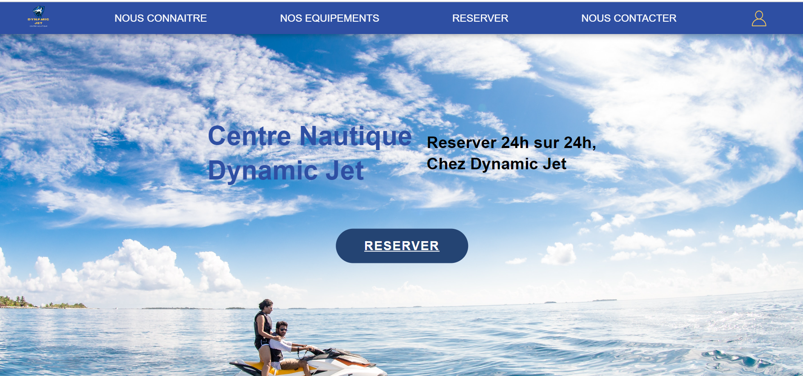
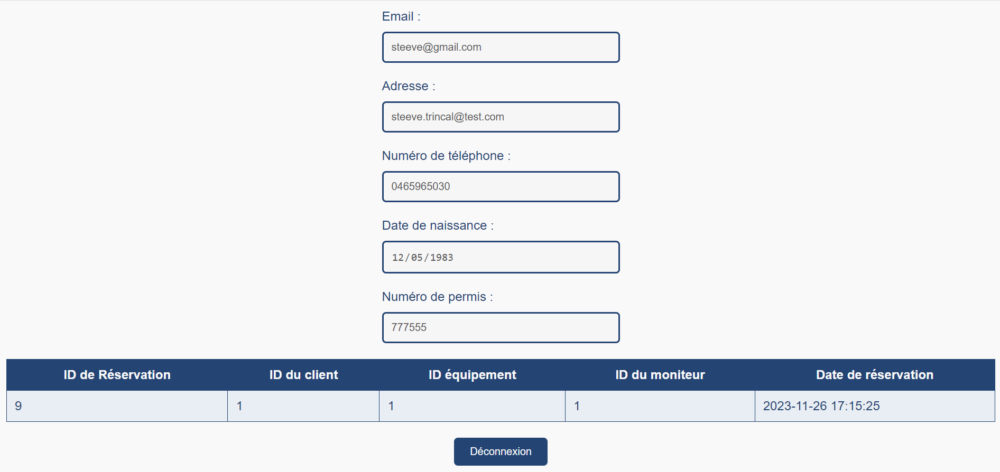
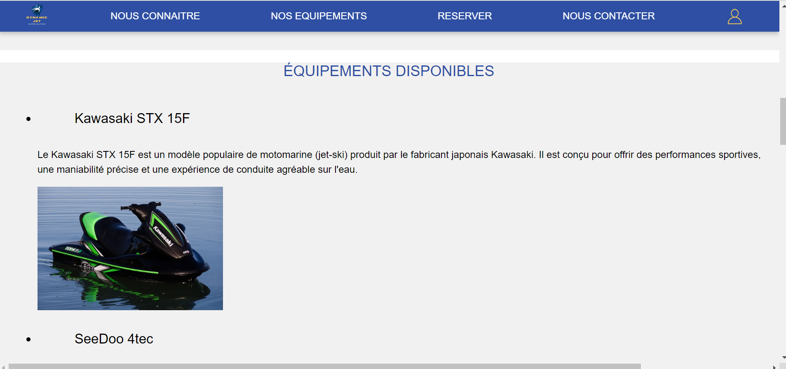

Dynamic Jet offre une solution complète pour la réservation de matériel nautique. Grâce à une gestion centralisée des réservations, les utilisateurs peuvent facilement planifier leurs activités nautiques tout en optimisant l'utilisation des équipements disponibles.
La conception de la plateforme intègre une manipulation intuitive de la base de données. Cela permet une gestion efficace des informations liées aux réservations, garantissant une expérience utilisateur fluide et fiable.
Le projet m'a donné l'opportunité de collaborer avec des développeurs témoignant de compétences diverses. Travailler en équipe avec eux a enrichi mon expérience, renforçant la compréhension des différentes perspectives et approches de développement.
La conception de bases de données orientée client a été un aspect clé du projet. En tenant compte des contraintes spécifiques des clients, nous avons élaboré une structure de base de données flexible et adaptative, répondant aux besoins variés des utilisateurs de la plateforme.
